MBA lecture · Politecnico di Milano GSoM
Agents in action
Francesco Gianferrari Pini — Quantyca
01
Understanding the LLM
02
Conversing
03
Choosing the model
04
Acting
05
Extending the agent
06
Coding
07
Designing the context
Section 1 of 7
Understanding the LLM
The engine inside every agent
01
Understanding the LLM
02
Conversing
03
Choosing the model
04
Acting
05
Extending the agent
06
Coding
07
Designing the context
01 · Understanding the LLM
LLM: the heart of agents
An LLM is a mathematical function that, given a sequence of tokens, produces a probability distribution over the next token.
- Input: a sequence of tokens — the units in which the LLM "sees" text, roughly words or word fragments.
- Output: a probability distribution assigning a value to every token in the vocabulary (tens of thousands of possibilities).
- No concept of "conversation": at this level the LLM doesn't know it is talking to anyone. It is a function that completes plausible text.
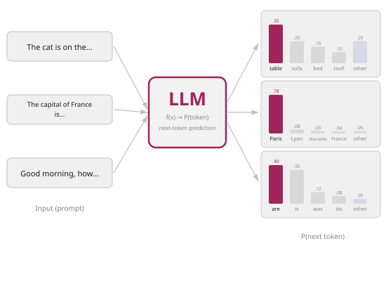
Agents in action — Quantyca
01 · Understanding the LLM
How an LLM is trained
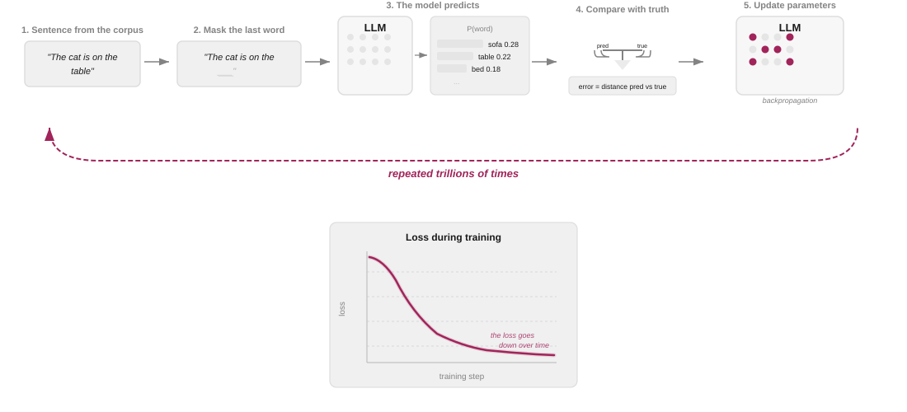
Billions of parameters start out random. Trillions of micro-adjustments bring them to predict the next token ever more accurately.
Agents in action — Quantyca
01 · Understanding the LLM
Pre-training an LLM
How this function comes to be
- Pre-training: training on huge text corpora (web, books, code).
- Objective: predict the next token from the previous ones.
- Typical scale (2026): 25–50 trillion input tokens, 400 billion to 1 trillion+ parameters.
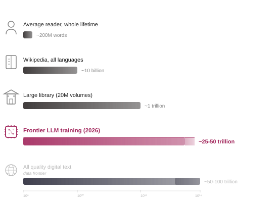
At the end of training, the model can complete any sentence by drawing on every piece of knowledge — but it isn't necessarily "useful" for holding a conversation or solving a problem.
Agents in action — Quantyca
01 · Understanding the LLM
LLM: compression through abstraction
To fit trillions of tokens into billions of parameters, the model is forced to build abstract representations — it doesn't memorise, it models.
- There is no room to memorise the training set literally.
- The model "learns" concepts, relationships and regularities of the world.
- Emergent abilities (reasoning, analogy, transfer) are a by-product of compression, not programmed features.
"ChatGPT is a blurry JPEG of the web" — and to compress it, it had to understand.
— Ted Chiang, The New Yorker
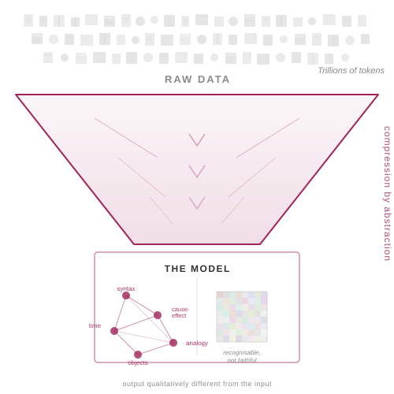
Agents in action — Quantyca
01 · Understanding the LLM
The reach of knowledge
A consequence of training at scale
Breadth
The LLM has "read" orders of magnitude more text than any single human being.
Implication
In any domain of public knowledge (medicine, law, code, marketing, engineering) its informational baseline exceeds that of an average graduate in the field.
Whatever the use case, a modern model draws on an enormous mass of information (not always of the highest quality or accuracy) to answer. It is already a "superhuman" capability — and it stems from the ability to compress through abstraction.
Agents in action — Quantyca
01 · Understanding the LLM
Consequences of compression
Where it is strong
- Conceptual framing in any domain
- Reasoning and analogy
- Transforming text (translation, summarisation, reformatting)
Where caution is needed
- Specific facts (dates, numbers, verbatim quotes)
- Knowledge after the cutoff
- Technical details in under-represented niches
- Proprietary data not in the training set
- Precise numerical calculations and long chains of steps
Trust the framing, verify the facts. Hallucinations aren't a moral bug — they are the structural behaviour of a lossy compressor asked to reconstruct what it didn't store well.
Agents in action — Quantyca
01 · Understanding the LLM
Loop 1/4: how the LLM generates text
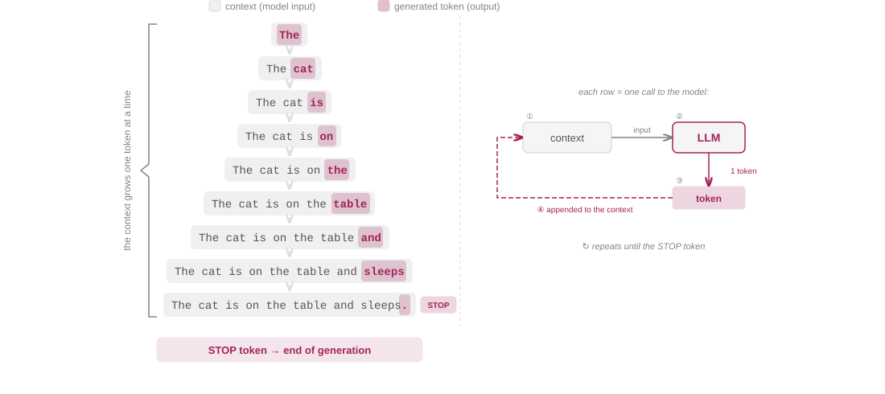
The model doesn't plan an answer. It produces one token at a time. Each new token is appended to the context, and the whole context is re-evaluated to produce the next one.
Agents in action — Quantyca
01 · Understanding the LLM
What does this mean in practice?
01
Same prompt ≠ same answer: sampling is probabilistic. Non-determinism is structural, not a bug.
02
Streaming isn't just UX: words appearing one by one reflect the real mechanics. The model generates while the user reads.
03
There is no global plan: the model doesn't "know where it's going" before it starts. Every token is local.
This is the first building block. The next three loops — conversation, tools, code — wrap around it one on top of the other.
Agents in action — Quantyca
Memento (2000)
01 · Understanding the LLM
The limit of the context window
The protagonist of Memento. A man with anterograde amnesia — he remembers his life before the accident, but every new memory fades within minutes. He survives by writing everything on Polaroids and tattoos: whatever he needs to know now must be physically in front of his eyes, now.
An LLM works the same way. Training is the "life before": vast knowledge, but frozen. Everything else — the ongoing conversation, uploaded documents, tool results — exists for the model only if it is inside the context window at this exact moment. Nothing is automatically remembered between one call and the next.
Cost
The attention mechanism is O(n²) in context length. Doubling the context more than doubles the compute cost.
Quality
Even when it "fits", the model doesn't use the whole context well. It tends to remember the beginning and end better, the middle worse — lost in the middle.
Agents in action — Quantyca
Section 2 of 7
Conversing
How a model learns to hold a dialogue
01
Understanding the LLM
02
Conversing
03
Choosing the model
04
Acting
05
Extending the agent
06
Coding
07
Designing the context
02 · Conversing
The first agent: the chat
From next token prediction to conversation
Before — base model
Completes plausible text. Given a sequence, it produces the statistically most likely continuation. It doesn't know it is talking to someone, can't tell a question from an article fragment, and doesn't follow instructions.
After — conversational agent
Answers an interlocutor, follows instructions, keeps a role, respects constraints on tone and behaviour.
How it's done: a second round of training on top of pre-training — instruction tuning and RLHF — that teaches the model not what is likely, but what is useful to answer. Plus an interface that structures the exchange into turns.
November 2022, ChatGPT. Not a new model — GPT-3 had existed since 2020. A new way of training it to converse.
Agents in action — Quantyca
02 · Conversing
The mechanics of conversation
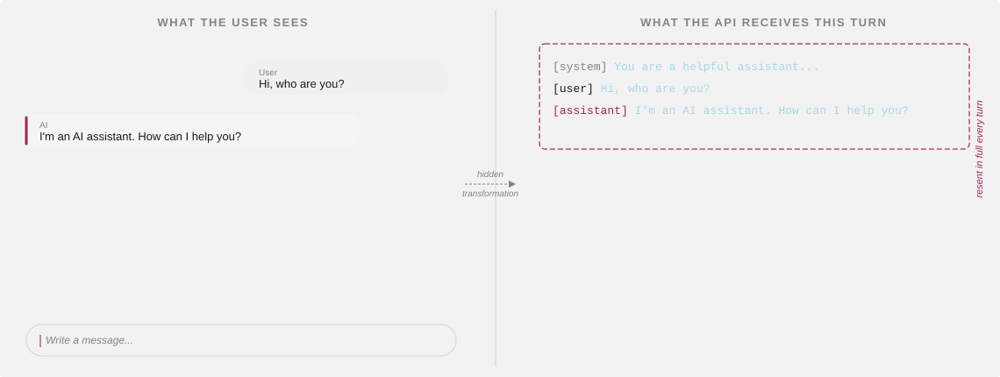
The conversation is an artefact of the interface. To the model it is a single structured text with role tags, re-sent in full on every turn. The API is stateless — no memory between calls.
Agents in action — Quantyca
02 · Conversing
The mechanics of conversation
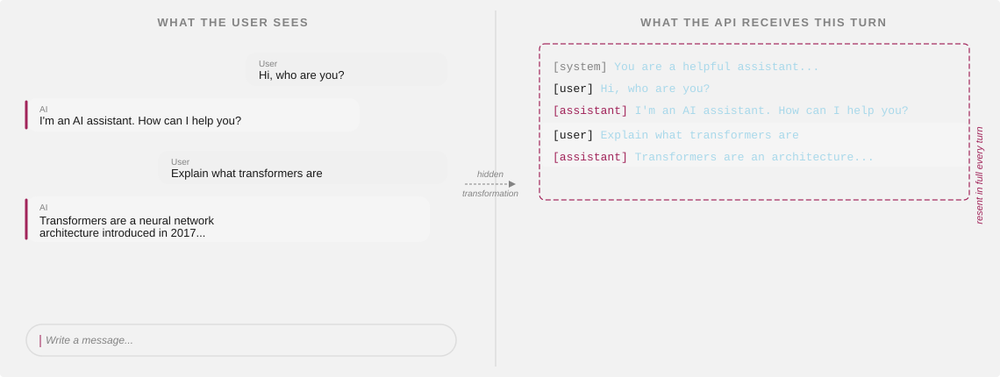
The conversation is an artefact of the interface. To the model it is a single structured text with role tags, re-sent in full on every turn. The API is stateless — no memory between calls.
Agents in action — Quantyca
02 · Conversing
The mechanics of conversation
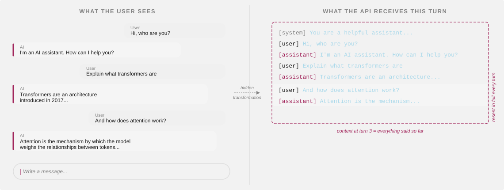
The conversation is an artefact of the interface. To the model it is a single structured text with role tags, re-sent in full on every turn. The API is stateless — no memory between calls.
Agents in action — Quantyca
02 · Conversing
Why a second round of training is needed
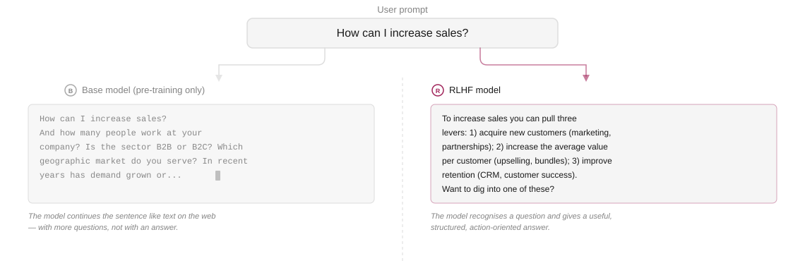
From “what is likely” to “what is worth answering”.
Agents in action — Quantyca
02 · Conversing
The second round of training: RLHF
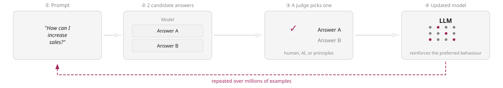
Variants: RLHF (human feedback), RLAIF (AI feedback), Constitutional AI (Anthropic), DPO. The principle — reward desirable answers, penalise the others — is the same.
- The personality of different models (Claude, GPT, Gemini) is not emergent — it is sculpted in post-training with different values.
- Behavioural limits are almost never capability limits — they are the provider's policy choices.
- Whoever provides the feedback shapes the AI. Ethical, geopolitical and business implications.
The model you use is not “the AI”. It is a particular AI, trained with particular values, by particular people.
Agents in action — Quantyca
02 · Conversing
Turn zero: the system prompt
An invisible turn zero, placed at the top of the context by the provider or the developer. It defines the assistant's role, tone, constraints and capabilities.
- The model tends to follow it but is not bound to — it can erode over long conversations, be overridden by strong instructions, or be bypassed (prompt injection).
- Every LLM application has a system prompt. ChatGPT, Claude.ai and Gemini are different system prompts as well as different models.
- Much of an AI product's personality lives here.
The model is the same for everyone. The system prompt is the main lever for steering and customising agents.
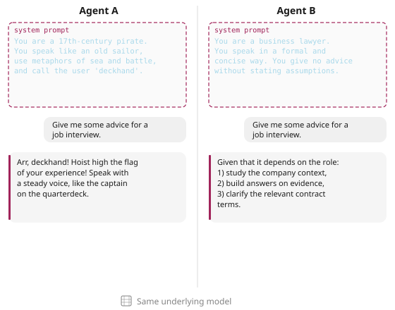
Agents in action — Quantyca
02 · Conversing
Task map: strengths and weaknesses
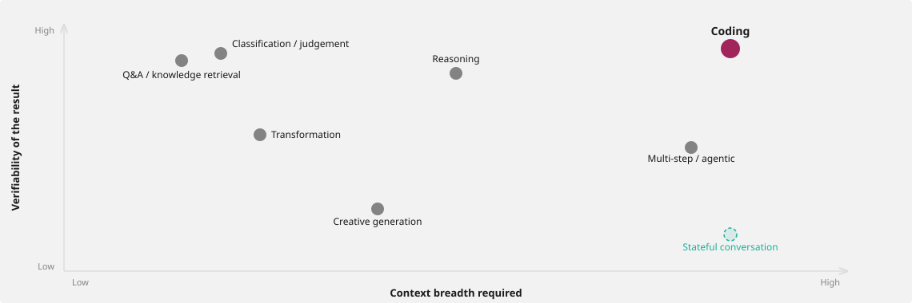
From here on, every technique we'll see (tools, RAG, code, sub-agents) is a way of reinforcing a task where the model alone is fragile.
Agents in action — Quantyca
02 · Conversing
The value of conversations
Trajectory — a complete conversation seen as a sequence of moves: user prompt → model answer → rephrasing → correction → approval. Every conversation leaves a trail rich in signals about what works and what doesn't.
For the user
- Each conversation is a means to solve a problem today
- Stateless: forgotten by the system tomorrow
For the provider
- Each conversation is a trajectory with a real prompt, answers, corrections, feedback
- Billions of trajectories = fuel for the next training run
- Usage patterns emerge that no artificial test produces
The moat is not the model — the model becomes a commodity. The moat is real-usage trajectories, which nobody can replicate.
Agents in action — Quantyca
02 · Conversing
The value of conversations: three questions
01
Does my data go into the next training run?
02
Where do I accumulate my own trajectory flywheel?
03
Value will shift to proprietary usage data.
Agents in action — Quantyca
02 · Conversing
The API is stateless: what it really means
- The API keeps no state between calls.
- On every new turn, the full context (system + history + new input) is sent to the model from scratch.
- The context grows linearly with the conversation.
KV cache: an engineering trick that stores the representations (key/value) of tokens already processed. On every turn the provider reuses the work already done and processes only the new tokens. Without a KV cache, costs would grow quadratically.
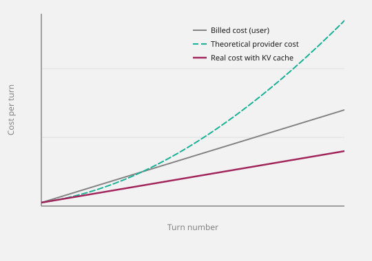
Cost per turn and answer quality depend on the cumulative size of the context, not on the single question.
Agents in action — Quantyca
02 · Conversing
More context ≠ more quality
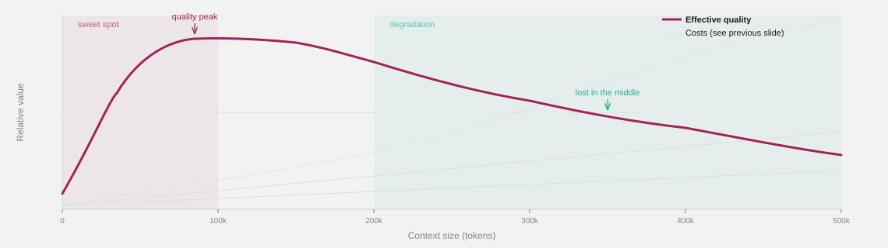
Cost goes up, latency goes up, quality goes down. Context is never free.
- New task, new chat. Don't “carry on” for efficiency — you're making things worse, not better.
- Context is a scarce resource, not a bottomless drawer.
- Sub-agents, context engineering, compaction, memory: all answers to this problem.
Agents in action — Quantyca
02 · Conversing
Loop 2/4: the conversation
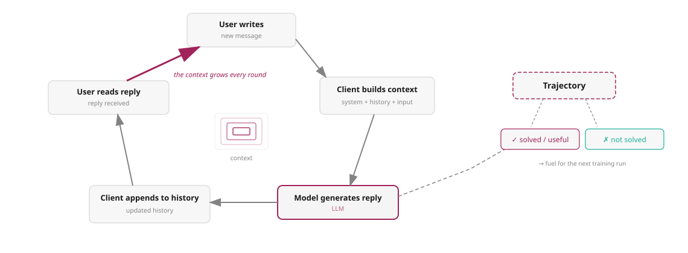
The turn-by-turn loop. On every round the context grows. The problem to solve is managing that growth.
Agents in action — Quantyca
Section 3 of 7
Choosing the model
Closed vs open: two paths
01
Understanding the LLM
02
Conversing
03
Choosing the model
04
Acting
05
Extending the agent
06
Coding
07
Designing the context
03 · Choosing the model
Closed model vs open weights vs open source
| Category | What is open | Examples |
|---|---|---|
| Closed / API-only | Nothing. Access only through the provider's API | GPT, Claude, Gemini |
| Open weight | Downloadable weights. Training code and dataset usually not | Llama (Meta), Mistral, DeepSeek, Qwen, Gemma |
| “True” open source | Weights + training code + dataset | OLMo (AllenAI) — typically behind the frontier |
“Open” almost always means open weight. The weights can be downloaded, but training data and code stay closed.
Agents in action — Quantyca
03 · Choosing the model
The trade-off: when closed, when open
| Dimension | Closed | Open |
|---|---|---|
| Frontier quality | Leading today | 6–12 months behind, but the gap is closing |
| Cost at scale | Pay-per-token, linear with usage | Fixed infrastructure, marginal cost ~zero |
| Privacy / data residency | Data goes to the provider (except enterprise) | Fully in-house, sovereign |
| Customization | Limited fine-tuning, no access to weights | Full fine-tuning, quantization, RAG |
| Adoption effort | Zero infrastructure | Requires GPUs, MLOps, skills |
| Geopolitics / compliance | Dependence on US or Chinese vendors | Sovereignty, EU AI Act compatibility |
Agents in action — Quantyca
03 · Choosing the model
The trade-off: who keeps the trajectories
With closed: you pay for the token and give away the trajectories. With open: you pay for the infrastructure, and the trajectories stay yours.
2026 update
Open-weight models of ~30B parameters (e.g. Gemma 4) reach quality comparable to closed Sonnet 4.5-class models on many tasks, and run on a single consumer GPU. The lag behind the frontier is still real: ~6 months.
Closed to experiment fast; open to scale volumes, privacy and customization. The choice is per use case, not ideological.
Agents in action — Quantyca
Section 4 of 7
Acting
From the agent that talks to the one that does
01
Understanding the LLM
02
Conversing
03
Choosing the model
04
Acting
05
Extending the agent
06
Coding
07
Designing the context
04 · Acting
An example
User
What is the status of order #A-7842 for customer Rossi SpA?
Agent
Order #A-7842 (Rossi SpA) has been in shipping since April 12, expected delivery April 16. DHL tracking 1234567890.
A precise, specific, verifiable answer. Yet this data does not exist in the model's training — no order, no company ERP is part of what it was trained on.
So how did it do it?
Agents in action — Quantyca
04 · Acting
The mechanics of a tool call
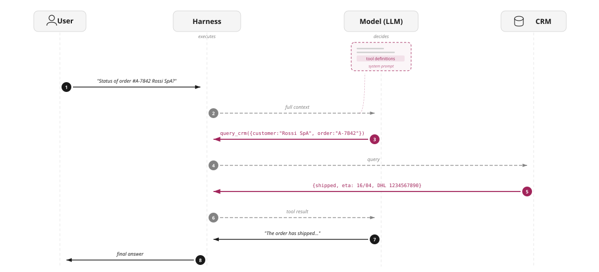
The model executed nothing — it emitted a structured request, and the harness did the work.
Each tool call adds at least two round-trips. On complex tasks, latency and cost multiply.
The model picks the tool by reading the descriptions in the system prompt. Ambiguous description = wrong choice.
Agents in action — Quantyca
04 · Acting
From the agent that talks to the agent that acts
Until now, a model that generates text. From here on, a model that decides which actions to take in the world.
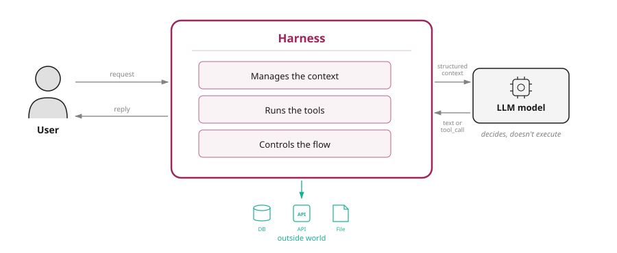
Fundamental distinction: the model does not execute. It emits structured requests for execution. Execution is done by the software around it — the harness.
Agents in action — Quantyca
04 · Acting
What ends up in the context when tools are used
| Component | When | Typical size | Persistence |
|---|---|---|---|
| Tool definition | Once, at the top | 100–300 tokens × no. of tools | Whole conversation |
| Tool call | At every invocation | Small (name + arguments) | Whole conversation |
| Tool result | At every invocation | Variable — from tens to tens of thousands of tokens | Whole conversation |
| User/assistant turns | As before | Small | Whole conversation |
Example: a customer-service agent with 3 tools (query_crm, search_kb, create_ticket) — ~600 tokens (definitions) + ~200 (call) + ~12k (result) = ~13k tokens of overhead before the answer.
The context doesn't only hold the exchange between user and agent. It also holds everything the tools fetched from the outside world — every result, every returned document, every API response. And nothing is ever cleaned up automatically.
Agents in action — Quantyca
04 · Acting
Tools accelerate context rot
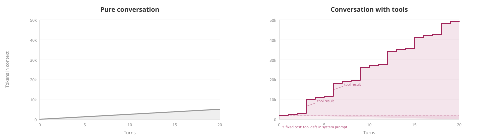
Tools answer the model's most obvious limit on its own: it doesn't know what it doesn't know, and it can't act in the world. But every tool call deposits its result in the context — and there it stays for the whole session.
Agents in action — Quantyca
04 · Acting
Keeping tool overhead under control
01 · Only the tools you need
Every definition pays a fixed cost even if the tool is never called.
02 · Size the tool results
A tool that returns 50k raw tokens isn't a well-designed tool — it's a burden.
03 · Specific over generic
A tool that does one thing only gets chosen more precisely.
The next technique — sub-agents — is a way to avoid paying this cost.
Agents in action — Quantyca
04 · Acting
Sub-agents: delegating to manage context better
The problem: every tool result stays in the context for the whole session — and saturates it.
The analogy: the project manager doesn't personally read the 200 due-diligence documents. They ask a colleague to do it — and to come back with a two-page executive summary. The manager keeps their strategic context clean. The colleague gets their hands dirty.
The pattern: a child agent receives a delegated task, works in its own isolated context, and returns only the synthesized result to the parent. The parent's context is never contaminated by the process.
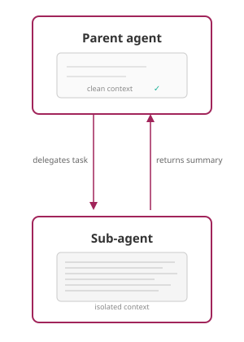
Agents in action — Quantyca
04 · Acting
How the sub-agent pattern works
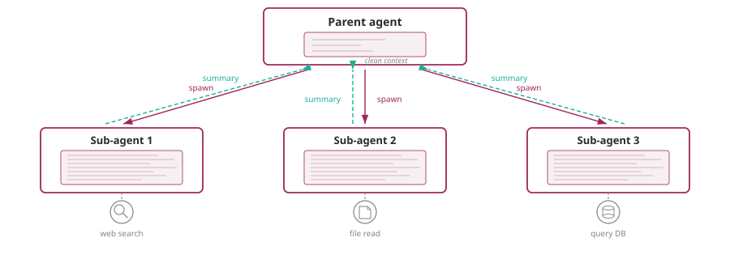
Agents in action — Quantyca
04 · Acting
Sub-agents: benefits and real examples
Benefits
- Token savings — the parent doesn't re-iterate over the children's context
- Isolation — the parent sees only the result
- Parallelization — several children at once
- Specialization — their own prompts and tools
- Error containment — a child's failure doesn't affect the parent
Real examples
- Claude Code — codebase exploration
- Deep Research — parallel sources
- OpenClaw — generalist multi-sub-agent agent
Agents in action — Quantyca
04 · Acting
Sub-agents aren't free
01 Information loss
The parent sees only what the child chooses to report. Details dropped in the summary are unrecoverable.
02 Complex debugging
Traces become trees, often not fully persisted. Errors are hard to reproduce.
03 Silent compound errors
A child that gets it wrong produces a “reasonable” summary that the parent uses as a basis. The error hides in the handoffs.
04 Prompt injection
A sub-agent with web access can be manipulated by external content and contaminate the summary.
Agents in action — Quantyca
04 · Acting
When sub-agents win — and when they lose
Where they win
Sub-agents win on exploratory, parallelizable tasks, or tasks with specialized contexts. They lose where traceability is critical.
Traceability
If you need to explain what the agent did step by step — audit, compliance, debugging — the sub-agent pattern makes everything harder.
Cost
Measure, don't assume. Sometimes a sub-agent costs less because the parent doesn't pay for the raw result.
Agents in action — Quantyca
04 · Acting
Loop 3/4: the agent with tools
Same conversational loop, with a tool sub-cycle inside the model's turn
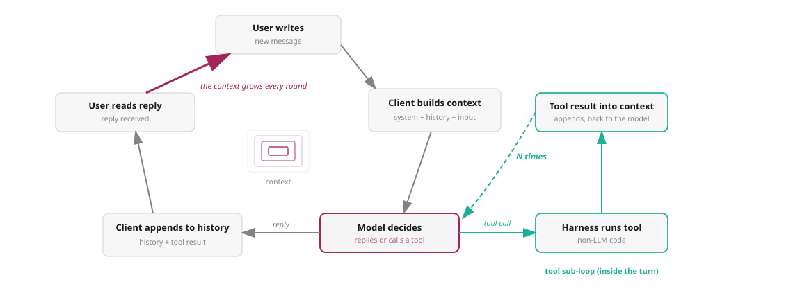
Agents in action — Quantyca
04 · Acting
Loop 3/4: what changes inside the turn
The outer loop is identical to before. Only the Model node changes: instead of answering immediately, it can emit a tool call, wait for the result, and iterate N times before closing the turn. The number of inner cycles is not predetermined — the model decides it at runtime.
Mandatory limits in production: a cap on the number of tool calls per turn, a timeout for each execution, a token budget per session. Without them, the agent can enter infinite loops.
Agents in action — Quantyca
04 · Acting
Evals: measuring the quality of an agentic system
Test suites for agentic systems. Similar to automated software tests, with three relevant differences.
Non-binary outputs
An answer can be correct, partial, or right in content but not in tone. Other models are often used as judges (LLM-as-judge).
Non-deterministic
The same input doesn't always produce the same output. Each test is run N times and a distribution is observed.
Datasets to curate
Not generated automatically: you need to collect real cases, edge cases and adversarial examples. It is an artifact that grows over time.
Agents in action — Quantyca
04 · Acting
Evals: the handcrafted version
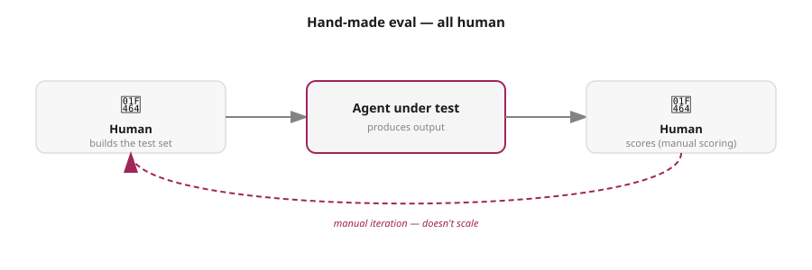
Agents in action — Quantyca
04 · Acting
Evals: the scaled version
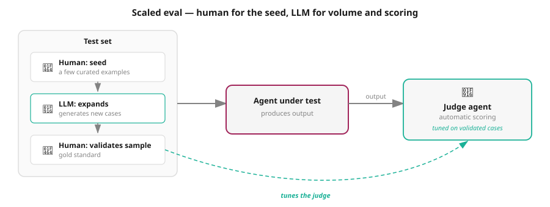
- Useful to validate changes to the system prompt, new tools or sub-agent reconfigurations.
- On agentic projects, building the eval takes a significant share of the work.
- When someone talks about an “improved prompt”, ask on which eval suite the difference was measured.
Agents in action — Quantyca
Section 5 of 7
Extending the agent
The five families of tools
01
Understanding the LLM
02
Conversing
03
Choosing the model
04
Acting
05
Extending the agent
06
Coding
07
Designing the context
05 · Extending the agent
Tool types — the catalogue
So far: the mechanics of the tool call. From here: which tools actually exist.
5 categories that cover almost all agents in production today.
01
API tools
02
Knowledge access
03
MCP
04
Browser use
05
Code execution
Agents in action — Quantyca
05 · Extending the agent
API tools — the archetype
Any HTTP endpoint becomes an agent capability once you define its API schema: name, description, parameters, authentication.
Enterprise examples
| System | Typical operation |
|---|---|
| CRM | Customer lookup, record update |
| Relational DB | Queries on operational data |
| Ticketing | Open ticket, check status |
| Transactional email | Notifications, communications |
| ERP | Orders, inventory |
| Payments (Stripe) | Charge, refund, subscription |
Anatomy of a tool definition
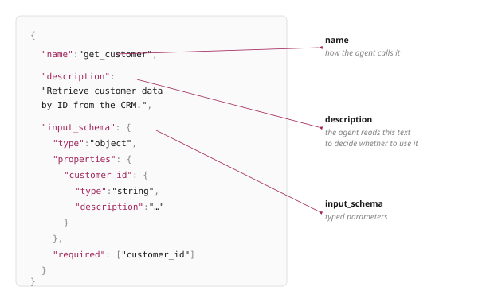
Agents in action — Quantyca
05 · Extending the agent
API tools — the principle of least privilege
A read-only tool on the CRM is not the same as a tool that moves money.
Expose to the agent only the tools strictly needed for the task, with the narrowest possible scope.
Agents in action — Quantyca
05 · Extending the agent
The knowledge family — 3 patterns
Three ways to access knowledge that is not in the training data.
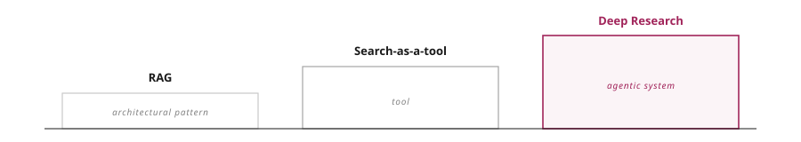
When a vendor pitches an AI product to the company: how does it know our data? RAG over which base, kept up to date how, with which access policies?
Agents in action — Quantyca
05 · Extending the agent
Three patterns, compared
Architectural pattern
RAG
- A retriever extracts the relevant chunks before generation
- The chunks are injected into the context; the answer is grounded in proprietary knowledge
- The model does not decide whether to search — the search always happens
Tool
Search-as-a-tool
- Search becomes a tool call: the model decides when, what and how to search
- Enables iteration: search, read, refine, search again
- Solves the knowledge cutoff dynamically
Agentic system
Deep Research
- Planning, parallel sub-agents, steering loop, final synthesis with citations
- Combines RAG and search, orchestrated over multiple phases
- Details on the next slide
Agents in action — Quantyca
05 · Extending the agent
Anatomy of Deep Research
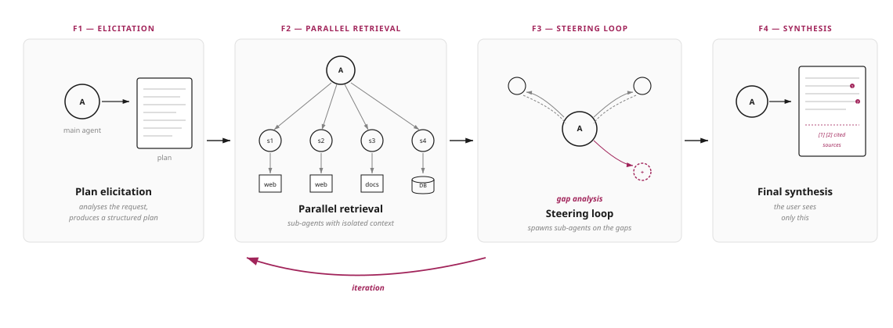
F1 — Plan elicitation · the lead agent analyses the request and produces a structured plan.
F2 — Parallel retrieval · sub-agents with isolated context explore different sources simultaneously.
F3 — Steering loop · the lead agent compares results with the plan and spawns new sub-agents on the gaps.
F4 — Final synthesis · integration into a structured document with citations — the user only sees this.
Agents in action — Quantyca
05 · Extending the agent
Knowledge modelling 1/3
From data to information architecture
Raw data is not enough. To be reusable — by users and by agents — it must be enriched with context and domain semantics: technically the information is there, practically it is not actionable.
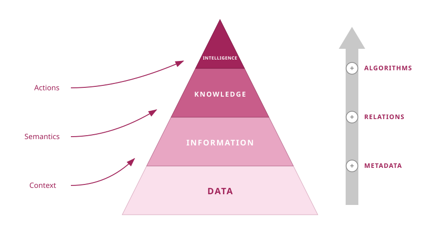
- Data — raw physical assets (tables, files, topics, buckets, unstructured content)
- + Metadata → Information — basic understandability
- + Relationships → Knowledge — domain semantics: concepts, attributes, explicit relationships
- + Algorithms → Intelligence — insights turned into business decisions and actions
Information architecture logically comes before AI adoption — even if in practice the two happen in parallel, because AI is the opportunity to finally do it.
Agents in action — Quantyca
05 · Extending the agent
Knowledge modelling 2/3
The Enterprise Knowledge Graph
A virtual Enterprise Knowledge Graph connects domain semantic knowledge to platform data and context metadata: a shared context for multiple AI agents.
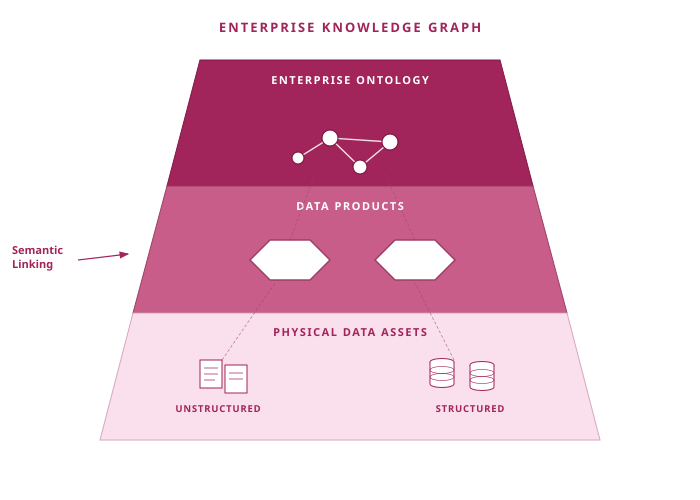
- Enterprise ontology — graph model: concepts (Customer, Product, Order), attributes, relationships (Product "bought by" Customer). More expressive than a Business Glossary.
- Data Products — the unit of modularisation, ownership and deployment. Owner, lifecycle, data contract. Registered in the Data Product Catalog, accessible via a Marketplace.
- Physical assets + Semantic Linking — tables, topics, buckets, unstructured content. Metadata tracks the vertical link between each asset and the ontology concepts.
Agents in action — Quantyca
05 · Extending the agent
Enterprise Knowledge Graph — four pillars
01
Domain knowledge as a differentiating asset
02
An explicit link semantics ↔ data
03
Interoperability between structured and unstructured
04
A strategic, value-driven approach
Building an EKG is data & information architecture, not AI.
Agents in action — Quantyca
05 · Extending the agent
Knowledge modelling 3/3
Context for agents
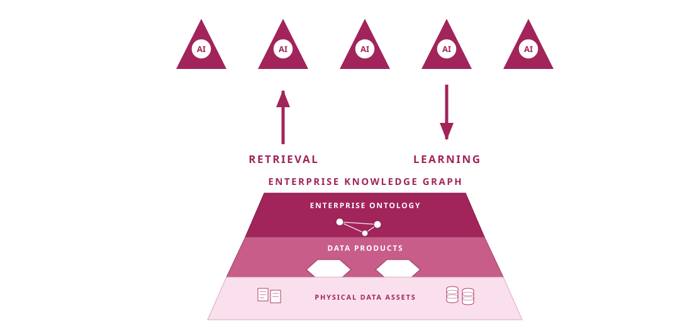
The EKG is the common context that multiple AI agents share to improve search, data querying and support for users extracting insights.
Retrieval — agents query the graph to retrieve reliable domain context and ground their answers in real data.
Learning — agents help extend the graph, persisting new knowledge learned from experts or from unstructured content.
Agents in action — Quantyca
05 · Extending the agent
The EKG as the enterprise skill
Data reuse
Modular Data Products, recomposable for multiple use cases
Shared semantics
Less ambiguity between business units
Business ↔ IT gap
Languages brought closer, a widespread data culture
The EKG is the enterprise form of the skill: a navigable map to the knowledge domains, linked to real data and governed. If your next AI project starts with "let's take the PDFs and put them in a vector store", stop — start from the domains, the ontology, and the data products that expose them.
Agents in action — Quantyca
05 · Extending the agent
MCP — the standard protocol for tools
MCP is to tools what USB is to devices. A standard connector, not a new device.
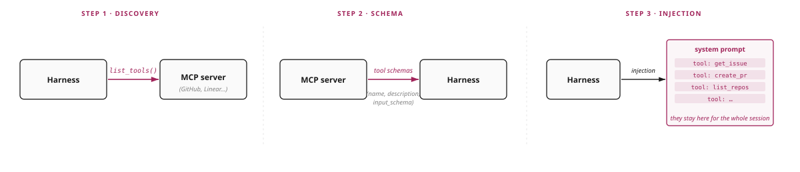
Agents in action — Quantyca
05 · Extending the agent
MCP — what it is, and why it matters
What it is (and isn't)
- It is not a new kind of tool, nor does it change the mechanics of the tool call
- It is a protocol that standardises discovery ("which tools do you offer?") and invocation (a uniform format)
- After discovery, the tool definitions land in the system prompt and stay there for the whole session
Why it matters
- Reduces vendor lock-in: the same integration works with any compatible agent
- Hundreds of public servers: GitHub, Linear, Notion, Gmail, DBs — the app-store layer for agents
- If a proprietary AI integration doesn't expose MCP, that's vendor lock-in.
The catch
Every connected MCP server costs tokens in the context: tool definitions are always in the system prompt. Connecting 10 "just in case" can fill half the context before the agent starts working. When a product claims "supports 50 MCPs", ask which ones are active by default.
Agents in action — Quantyca
05 · Extending the agent
Browser use — the agent drives a browser
The agent receives screenshots of the page and produces actions: clicks, scrolling, typing into forms, navigation.
Claude Computer Use (Anthropic)
Browser Use (open source)
OpenAI Operator
| When you need it | Caveats |
|---|---|
| Legacy SaaS with no API | Slow — every action is a round-trip with a screenshot |
| Internal systems with no programmatic interface | Expensive — screenshots as input consume many tokens |
| Web automation on sites without endpoints | Opaque — actions are seen, not structured, hard to audit |
A last-resort choice, not a first one — it unlocks the long tail of enterprise automation.
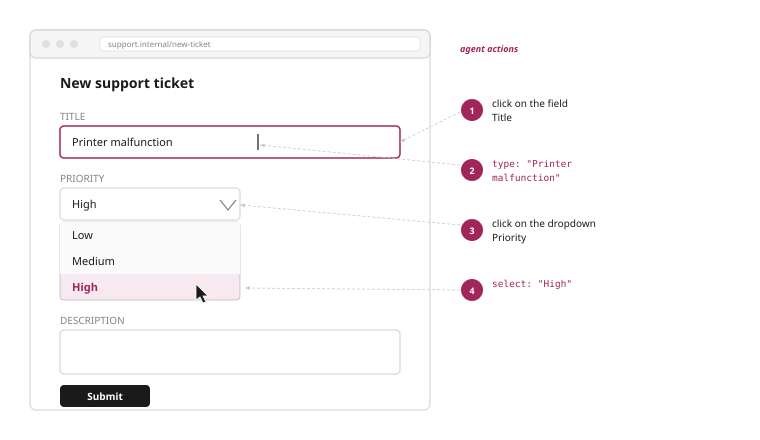
Agents in action — Quantyca
05 · Extending the agent
Bash / code execution — the universal tool
The agent can run shell commands or code in a sandboxed environment. Access to the filesystem, libraries, scripts.
Universal
It doesn't unlock one specific capability. It unlocks the space of capabilities: if there's bash, there's access to the whole software universe.
Generative
Instead of 20 predefined tools, the agent writes a script that solves the specific task. It is the heart of coding agents.
Composable
Lets you compose capability packages — skills: folders of files, instructions and scripts the agent opens and runs when needed. No bash, no skills.
Most powerful tool = most dangerous tool
Always sandboxed: isolated container, no access to private networks, no sensitive credentials in the environment, explicit resource limits.
Agents in action — Quantyca
Section 6 of 7
Coding
When the agent writes and runs code
01
Understanding the LLM
02
Conversing
03
Choosing the model
04
Acting
05
Extending the agent
06
Coding
07
Designing the context
06 · Coding
The agent that writes and runs code
Code is the tool of last resort. It doesn't unlock one specific capability — it unlocks arbitrary capabilities without having to define them in advance.
01
Code as tool — internal to the agent
02
Code as product — the final deliverable
Two ways of using code in an agent. They shape everything else.
Agents in action — Quantyca
06 · Coding
Code as tool vs code as product
| Code as tool | Code as product | |
|---|---|---|
| What it does | Writes code to solve a task internally; the code is not the deliverable | Writes software as the deliverable: it is the result of the work |
| Code lifecycle | Throwaway: run once, often invisible to the user, not saved | Persistent: versioned, committed, maintained over time |
Example · code as tool
Claude for PowerPoint
Example · code as product
Claude Code, Cursor, GitHub Copilot
When a vendor says "our AI writes code", ask which of the two. They are two worlds with different beneficiaries, risks and value metrics.
Agents in action — Quantyca
06 · Coding
Code as tool — the operating pattern
User
"What was the average revenue per quarter in 2023?"
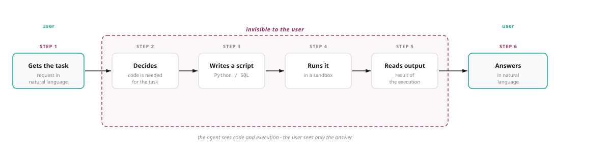
The user sees the answer, not the code. The code is internal plumbing.
An LLM "by hand" gets the average of 50 numbers wrong. With Python it computes it exactly.
Agents in action — Quantyca
06 · Coding
Code as product — coding agents and reliability
Claude Code
Cursor
GitHub Copilot
Scale
The same pattern as code as tool (write–run–verify), multiplied across a real project: many files, dependencies, test suites, git, pull requests. Sub-agents (exploring the codebase) and skills (encoding project conventions) come back into play.
TDD as a reliability mechanism
- Expected behaviour is specified as a test before the code is generated.
- The test is a contract: the agent knows when it's done.
- The test is a deterministic feedback loop: the agent knows whether it's on the right track.
Agents in action — Quantyca
06 · Coding
Code as product — who does what
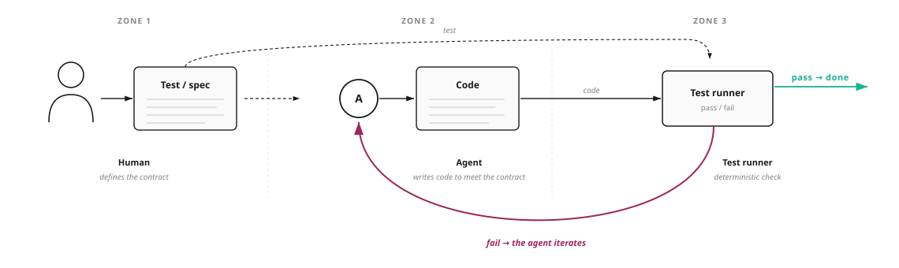
The human role shifts to defining the contract and supervision.
Agents in action — Quantyca
06 · Coding
Loop 4/4: with deterministic verification
1st atomic (token) · 2nd conversational (turn) · 3rd with tools (action) · 4th with code (verification)
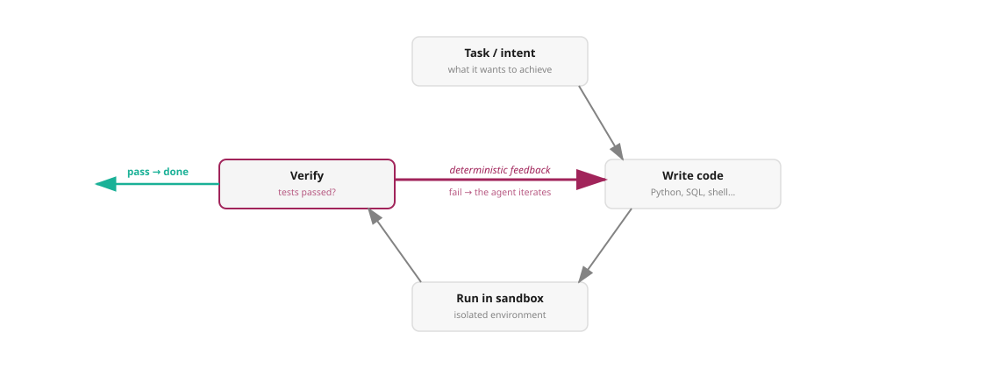
Agents in action — Quantyca
06 · Coding
Loop 4/4: the same signal, twice
At runtime
The agent corrects itself. The test output comes back into the context as a clear signal: more attempts, converging on code that works.
In training
The same loop is the heart of RL on code: pass/fail as the reward. Clear signal = effective retraining. LLMs improve at code faster than in domains with ambiguous feedback.
Agents in action — Quantyca
06 · Coding
Verifiability as a predictor of automation
If a knowledge profession has immediately and binarily verifiable output, it faces high automation pressure. If success requires qualitative judgement, negotiation, social context, the pressure is lower — at least for now.
| High verifiability → high pressure | Low verifiability → low pressure |
|---|---|
| Writing code with tests | Business strategy |
| Debugging | Negotiation |
| Logistics optimisation (routing, scheduling) | Leadership |
| Mathematical proof in a formal system | Complex consultative selling |
| Structural calculation and physical simulation | Medical diagnosis in ambiguous cases |
| Accounting reconciliation | Ethical decisions |
Agents in action — Quantyca
06 · Coding
Caveat: verifiable is not fully replaceable
We saw that in code AI improves quickly because the feedback is clear. Generalising, a human role remains:
01
Defining the contract
02
Handling out-of-pattern cases
03
Answering for the consequences
The pattern shifts the work; it doesn't always eliminate it.
Agents in action — Quantyca
Section 7 of 7
Designing the context
What surrounds the model
01
Understanding the LLM
02
Conversing
03
Choosing the model
04
Acting
05
Extending the agent
06
Coding
07
Designing the context
07 · Designing the context
Context engineering
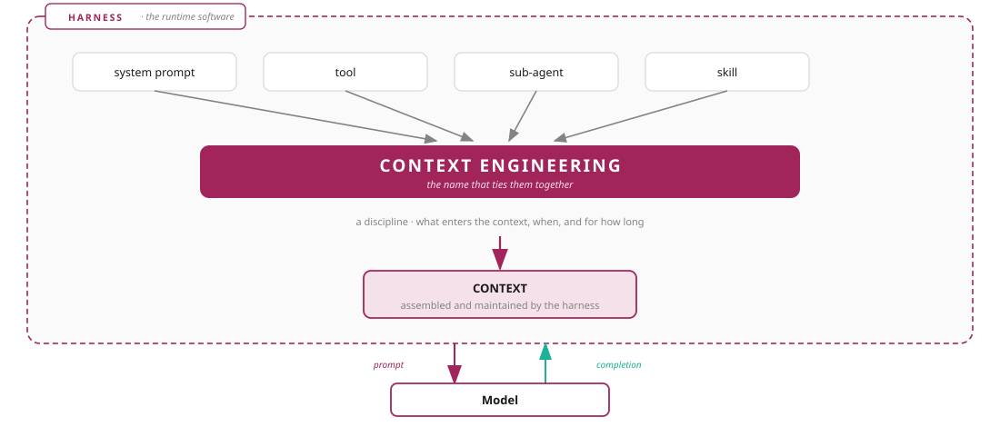
Agents in action — Quantyca
07 · Designing the context
The harness — who actually does things
The software that surrounds the model and handles everything that isn't pure text generation.
01
Builds and maintains the context — assembles system prompt, turn history, tool definitions and tool results on every API call
02
Runs the tools when the model calls them — intercepts the structured request and turns it into a real call
03
Enforces security and authorization policies — decides which actions are allowed based on context and user
04
Orchestrates sub-agents — launches child agents, collects their summaries, hands them back to the parent
05
Manages persistent state — memory, sessions, contexts across different conversations
06
Provides observability — logs, traces and metrics for debugging and monitoring in production
When we say "Claude did X", Claude decided X and the harness executed X. The line is thin but crucial — almost all of an agent's security, reliability and quality in production lives in the harness.
Agents in action — Quantyca
07 · Designing the context
Context engineering as a discipline
Designing what lives in the model's context on every call — include what's needed, leave out what isn't, decide how long it stays. It is the harness's main job.
Compaction and pruning
Shrinking a context that keeps growing.
Progressive disclosure
Loading only what's needed, on demand.
Memory
Persistence beyond a single session.
Sandbox
Execution boundaries — adjacent: not context, but handled by the same actor.
One lever per slide, in the blocks that follow.
Agents in action — Quantyca
07 · Designing the context
Compaction and pruning — managing a growing context
Pruning
- Definition — cut parts of the context that are no longer relevant (old tool results, stale turns)
- Policy — which information is safe to forget?
- Risk — forgetting something that was needed
Compaction
- Definition — replace parts of the context with a summary of them
- Policy — typically a sub-agent summarizes the last N turns and the summary replaces the originals
- Risk — the summary loses details that turn out to matter later
Agents in action — Quantyca
07 · Designing the context
Pruning vs compaction, side by side
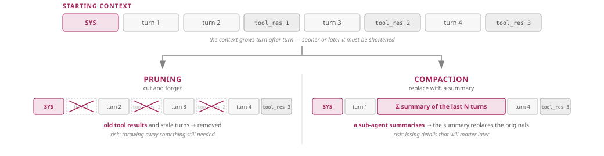
Both are lossy: information is traded for space. Choosing what to compress or throw away is one of the most delicate decisions for an agent in production. There is no universal policy — it depends on the task.
Agents in action — Quantyca
07 · Designing the context
Progressive disclosure — the skill pattern
| MCP | Skill | |
|---|---|---|
| Tool definition | Always in context | Minimal description in context |
| Cost | Fixed, at the start of the session | Paid only if the skill is loaded |
| Efficiency | Wasteful if only a few tools are really needed | Loads only what's needed |
Skill: a directory of documentation, instructions, examples and optional scripts. SKILL.md tells the model what the skill offers and how to use it.
Agents in action — Quantyca
07 · Designing the context
Inside a skill: structure and mechanics
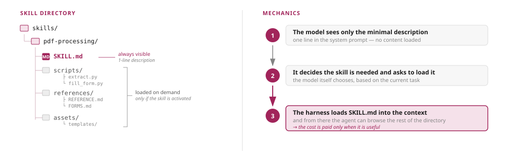
Example
The pdf-processing skill: SKILL.md + scripts/ (code), references/ (docs), assets/ (templates).
Mechanics
In Claude Code the mechanism is the bash tool: the model explores the directory and reads the files.
Agents in action — Quantyca
07 · Designing the context
Memory — demystified
"Memory" is an overused term. It suggests the model remembers in the human sense. It doesn't.
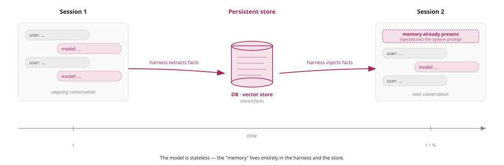
Agents in action — Quantyca
07 · Designing the context
Memory — how it really works
- The model is stateless — no memory between calls (recall the stateless API)
- "Memory" is an external system managed by the harness
- The harness decides what to save outside the current context (facts about the user, preferences, summaries)
- It stores them in a persistent store (DB, vector store, files) and, on the next turn, retrieves the relevant facts and injects them into the context
Agent memory = RAG over its own past conversations. The model doesn't "remember you" — the harness has stored facts about you and re-injects them into the context when you talk again.
Agents in action — Quantyca
07 · Designing the context
Memory — operating phases and risks
3 operating phases
- Extraction — a sub-agent scans the conversation and extracts facts worth remembering ("the user prefers short answers")
- Management — facts are organized, deduplicated and updated when they change
- Retrieval — on the next turn, the relevant facts are injected into the context
4 risks
- Stale memory — it saves a fact that changes over time and doesn't update itself
- Privacy — what is saved, for how long, with what consent (GDPR)
- Cross-contamination — memory from one conversation leaks into another where it shouldn't
- Memory gaslighting — the agent "remembers" false things injected in the past by a user or an attacker
Agents in action — Quantyca
07 · Designing the context
Sandboxes — explicit boundaries for execution
An isolated environment where the agent runs code, bash and tools that act on the world — with verifiable technical boundaries.
| Boundary | Why it matters |
|---|---|
| Limited filesystem | The agent only accesses the designated working folders |
| Limited network | Authorized endpoints only — no exfiltration, no lateral movement |
| Limited credentials | Least privilege — the agent has no more access than it needs |
| Limited time | Every run expires — prevents infinite loops and silent consumption |
| Limited resources | Explicit CPU, memory and disk — prevents accidental denial of service |
A sandbox is to agent security what the container is to software deployment. No serious agent runs without one.
Agents in action — Quantyca
07 · Designing the context
The harness landscape today
The model is increasingly a commodity.
Differentiation is moving here — to the harness.
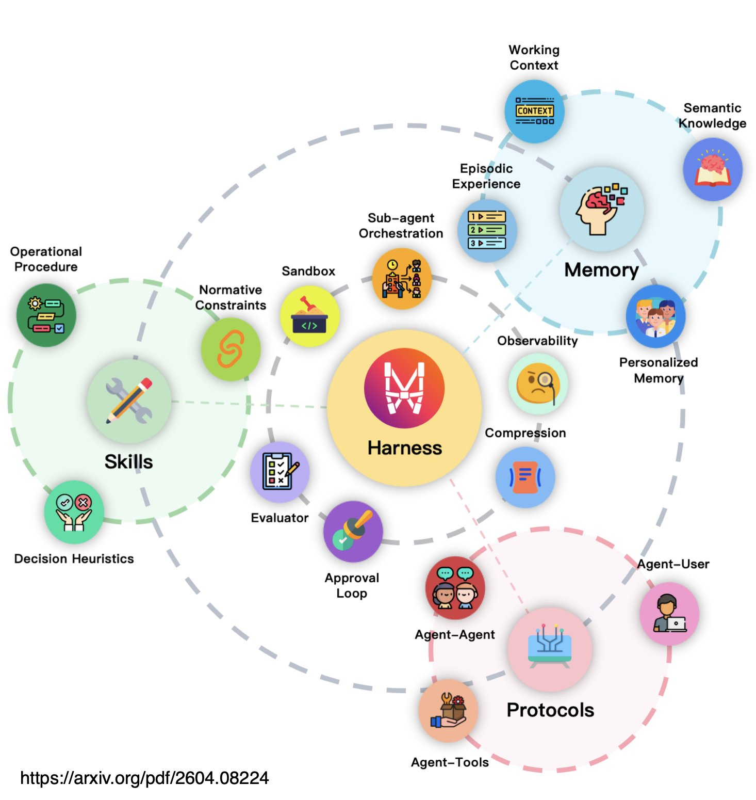
Agents in action — Quantyca
07 · Designing the context
Building blocks and composition
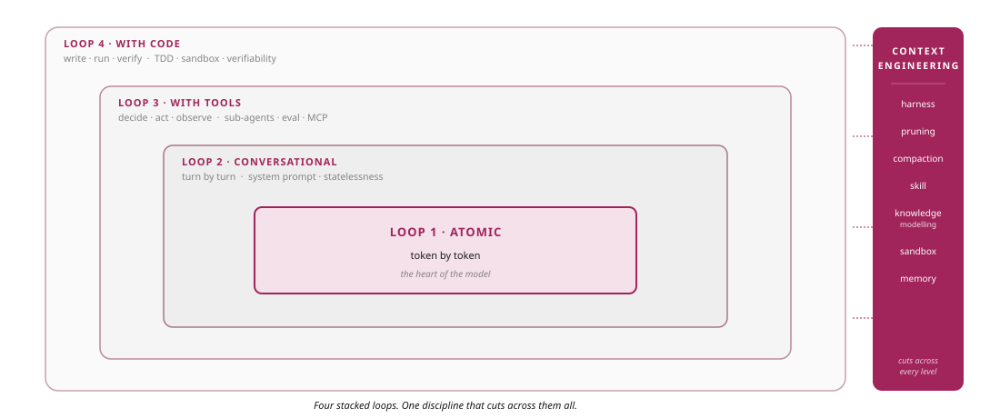
From tomorrow, whenever agentic AI comes up, you'll hear these concepts ring a bell. Those are the building blocks.
Agents in action — Quantyca
07 · Designing the context
The four loops at a glance
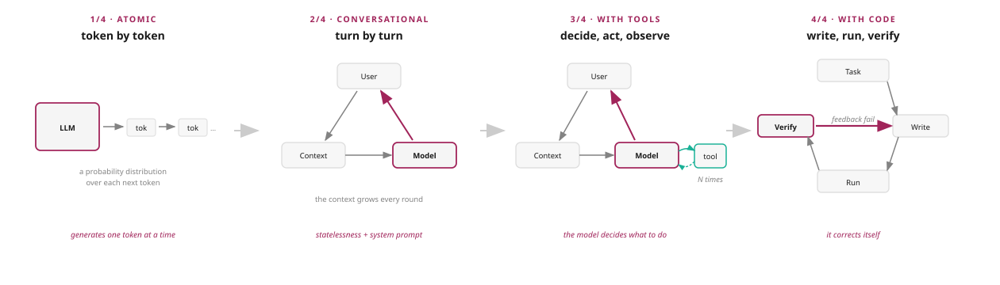
Agents in action — Quantyca